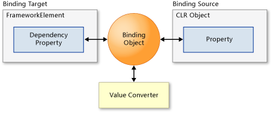
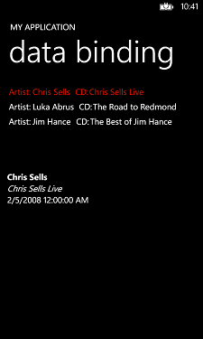

概述
IOS和Android并没有与Windows商店应用类似的数据绑定的机制，他们的UI更新通常用以下方法实现：
IOS
IOS通常在ViewController中直接操作UI控件，需要注意的是在非主线程操作UI时，可以用performSelectorOnMainThread来实现。
Android
Android的UI更新方法主要有下面4种：
1. 如果只是单纯的想要更新UI而不涉及到多线程的话，使用View.post()就可以了;
2. 需要另开线程处理数据以免阻塞UI线程，像是IO操作或者是循环，可以使用Activity.runOnUiThread();
3. 如果需要传递状态值等信息，像是蓝牙编程中的socket连接，就需要利用状态值来提示连接状态以及做相应的处理，就需要使用Handler + Thread的方式;
4. 如果是后台任务，像是下载任务等，就需要使用AsyncTask。
Windows Phone&Windows8
数据绑定为 Windows Phone 的应用提供了一种显示数据并与数据进行交互的简便方法。数据的显示方式独立于数据的管理。UI 和数据对象之间的连接或绑定使数据得以在这二者之间流动。绑定建立后，如果数据更改，则绑定到该数据的 UI 元素可以自动反映更改。同样，用户对 UI 元素所做的更改也可以在数据对象中反映出来。例如，如果用户编辑 TextBox 中的值，则基础数据值会自动更新以反映该更改。
常用的一些绑定方案包括将 ListBox 绑定到标题列表，将输入窗体的 TextBox 绑定到客户数据对象，或者将 Image 绑定到当前用户的照片。
要将数据绑定到UI元素，必须为每个绑定都指定源和目标。下图演示绑定的基本概念。

源可以是任意 CLR 对象，包括目标元素自身或其他 UI 元素。如果目标处于某一数据模板中，则源可以是该模板应用于的 UI 元素。
目标可以是 FrameworkElement 的任一 DependencyProperty。
在以下情况下目标还可以是 DependencyObject 的 DependencyProperty：
- DependencyObject 是 FrameworkElement 的某个属性的值。
- DependencyObject 在一个作为 FrameworkElement 属性的值的集合中（例如，Resources 属性）。
- DependencyObject 在 DependencyObjectCollection<T> 中。
从 Windows Phone 8 开始，目标还可以是 Style 中 Setter 的 Value 属性。有关示例，请参见 Style 类的概述。
绑定引擎从 Binding 对象获取以下方面的信息：
- 源对象和目标对象。
- 数据流的方向。通过设置 Binding.Mode 属性指定方向。
- 值转换器（如果存在）。通过将 Binding.Converter 属性设置为实现 IValueConverter 的类的实例，可指定值转换器。
- 其他设置，例如 StringFormat、FallbackValue 和 TargetNullValue。有关属性的完整列表，请参见Binding 类。
数据流方向
每个绑定都有一个 Mode 属性，该属性决定数据流动的方式和时间。在 Windows Phone 中，您可以使用三种类型的绑定：
● 创建 OneTime 绑定时，该绑定使用源数据更新目标。
● 创建 OneWay 绑定时以及每当源数据发生变化时，该绑定使用源数据更新目标。这是默认模式。
● 当目标和源有一个发生变化时，TwoWay 绑定既更新目标也更新源。或者，您可以禁用自动源更新，只在您选择的时间对源进行更新。
为了能够发生自动目标更新，源对象必须实现 INotifyPropertyChanged 接口，如下一部分所述。
更改通知
为了使源对象的更改能够传播到目标，源必须实现 INotifyPropertyChanged 接口。INotifyPropertyChanged具有 PropertyChanged 事件，该事件通知绑定引擎源已更改，以便绑定引擎可以更新目标值。
若要获取绑定到 ItemsControl 的集合的更改通知，除了实现 INotifyPropertyChanged 外，还要实现INotifyCollectionChanged。如果实现 INotifyCollectionChanged，对集合的更改（例如添加或移除对象）将传播到目标。若要获取集合中对象的属性更改通知，这些对象必须实现 INotifyPropertyChanged。
在实现您自己的集合之前，应考虑使用 ObservableCollection<T> 类，该类具有 INotifyCollectionChanged和 INotifyPropertyChanged 的内置实现。
更新数据源
在 TwoWay 绑定中，对目标的更改会自动更新源，但绑定到 TextBox 的 Text 属性时除外。这种情况下，更新仅在 TextBox 失去焦点时发生。
您可以禁用自动源更新，只在您选择的时间对源进行更新。例如，您可以这样做，以便在更新绑定数据源之前验证来自多个控件的用户输入。
若要禁用自动源更新，请将 UpdateSourceTrigger 属性设置为 Explicit。此设置影响使用相同 Binding 对象的所有绑定（例如，在使用继承的数据上下文时）。但是，您必须为每个绑定单独更新源。若要更新某一绑定，请首先调用目标元素的 FrameworkElement.GetBindingExpression 方法，并且传递到目标DependencyProperty 中。然后，可以使用返回值调用 BindingExpression.UpdateSource 方法。
绑定到集合
可以将绑定源对象视为一个对象（其属性包含数据），也可以将它视为一个对象集合。例如，您可能希望显示项的列表，如每月的信用卡帐单。为此，请使用 ItemsControl 并使用 DataTemplate 以显示集合中的每一项。
XAML
可以枚举实现 IEnumerable 的任何集合。如果希望目标在集合更改时更新 ItemsSource，请实现INotifyCollectionChanged。有关更改通知的更多信息，请参见本主题前面介绍的"更改通知"部分。
还可以绑定到 CollectionViewSource 类的实例，该类提供对其他数据源的排序、分组、筛选和货币支持。CollectionViewSource 使您可以显示多个数据视图，这些视图保持与用户选择更改同步。
您还可以使用 CollectionViewSource 将多个控件绑定到在层次结构上相关的数据。
数据验证
Windows Phone 支持在 TwoWay 绑定中对从目标到源的更新进行简单数据验证。
只要绑定的 Validation.Errors 附加属性包含错误，Windows Phone 就会报告验证错误。在以下情况下，将向此集合中添加错误：
- 从绑定引擎的类型转换器中引发了异常。
- 在绑定对象的 set 访问器中引发了异常。
- 在应用到数据对象或成员的验证属性中引发了异常。
- 此绑定对象实现 IDataErrorInfo，并且其 Item 属性返回不是 null 或 Empty 的值。
- 此绑定对象实现 INotifyDataErrorInfo，并且其 GetErrors 方法返回不是 null 的值。GetErrors 返回值可能会因为完成了异步验证操作而发生变化。
在发生以下情况时，Windows Phone 会为验证错误提供直观的反馈：
- ValidatesOnExceptions 属性值为 true。
- ValidatesOnDataErrors 属性值为 true。然而，如果 ValidatesOnExceptions 属性值为 true，则将忽略源属性的 ValidatesOnDataErrors 属性，并且源属性 setter 引发异常。
- ValidatesOnNotifyDataErrors 属性为 true。此属性可以与 ValidatesOnExceptions 和ValidatesOnDataErrors 属性配合使用。
该可视反馈指示包含错误的控件并显示附近的错误消息。
为了收到发生了验证错误或者错误已解决这一通知，还必须在绑定对象上将 NotifyOnValidationError 属性设置为 true。这指示绑定引擎在验证错误添加到 Validation.Errors 集合或者从该集合中删除时引发BindingValidationError 事件。例如，您可以处理错误事件，以便记录错误或提供其他可视反馈。
若要处理 BindingValidationError 事件，请在目标对象或其任一父级上创建一个事件处理程序。BindingValidationError 事件为路由事件，因此如果不在引发该事件的元素上予以处理，它将不断向上冒泡，直到得到处理。
数据转换
可能需要以不同于数据存储方式的格式来显示数据。下面是一些示例：
将某种颜色存储为一个 RGBA 值，但将它显示为一个字符串名称。
将某个数字存储为一个浮点值，但将它显示为一个货币值。
将某个日期存储为 DateTime，但将它显示在日历中。
存储一个 null 值，但显示一个友好的默认值。
可以通过设置 StringFormat 属性来格式化用于显示的任何 String 值。
还可以通过设置 TargetNullValue 属性显示用于 null 后备值的友好默认值。
还可以对任何绑定设置转换器。通过创建一个类和实现 IValueConverter 接口来针对每个具体的应用场景自定义该转换器。下面的示例演示如何实现 IValueConverter。
C#
// Custom class implements the IValueConverter interface.
public class DateToStringConverter : IValueConverter
{
#region IValueConverter Members
// Define the Convert method to change a DateTime object to
// a month string.
public object Convert(object value, Type targetType,
object parameter,
System.Globalization.CultureInfo culture)
{
// value is the data from the source object.
DateTime thisdate = (DateTime)value;
int monthnum = thisdate.Month;
string month;
switch (monthnum)
{
case 1:
month = "January";
break;
case 2:
month = "February";
break;
default:
month = "Month not found";
break;
}
// Return the value to pass to the target.
return month;
}
// ConvertBack is not implemented for a OneWay binding.
public object ConvertBack(object value, Type targetType,
object parameter, System.Globalization.CultureInfo culture)
{
throw new NotImplementedException();
}
#endregion
}如果为绑定定义了 Converter 参数，则绑定引擎会调用 Convert 和 ConvertBack 方法。从源传递数据时，绑定引擎调用 Convert 并将返回的数据传递给目标。从目标传递数据时，绑定引擎调用 ConvertBack 并将返回的数据传递给源。下面的示例演示如何设置 Converter 参数。
XAML
转换器还具有可选参数：ConverterCulture 和 ConverterParameter，通过前者可以指定转换中使用的区域性，通过后者可以为转换逻辑传递一个参数。有关使用这些参数的示例，请参见 IValueConverter。
如果转换时发生错误，将不会引发异常，而是返回 DependencyProperty.UnsetValue，它将停止数据传输。
若要显示当无法解析绑定源时就会出现的默认值，请设置 FallbackValue 属性。这用于处理转换和格式化错误。还可用于绑定到可能在绑定集合中的所有对象上都不存在的源属性。
MVC和MVVM
MVC 全名是Model View Controller，是模型(model)－视图(view)－控制器(controller)的缩写，一种软件设计典范，用于组织代码用一种业务逻辑和数据显示分离的方法，这个方法的假设前提是如果业务逻辑被聚集到一个部件里面，而且界面和用户围绕数据的交互能被改进和个性化定制而不需要重新编写业务逻辑。MVC被独特的发展起来用于映射传统的输入、处理和输出功能在一个逻辑的图形化用户界面的结构中。
完全理解MVC并不是很容易。使用MVC需要精心的计划，由于它的内部原理比较复杂，所以需要花费一些时间去思考。同时由于模型和视图要严格的分离，这样也给调试应用程序带来了一定的困难。每个构件在使用之前都需要经过彻底的测试。
模型-视图-视图模型 (MVVM) 是一种用来分离 UI 和非 UI 代码的应用设计模式。是MVC模式的一种变体，使用 MVVM，可以按声明方式定义 UI（例如，使用 XAML），并使用数据绑定标记将 UI 链接到包含数据和用户命令的其他层。数据绑定基础结构提供了一种松散的耦合，这种耦合使 UI 和链接数据保持同步并将所有的用户输入路由到相应的命令。
MVVM 模式对你的代码进行组织，以便你可以在更改代码的一部分时不影响其他部分。这有许多优点，其中包括：
——启用交互式探索性编码样式。
——简化单元测试。
——更好地利用设计工具（如 Expression Blend）。
——支持团队协作。
MVVM模式由于层与层之间是严格的分离，与MVC模式有很多优点，主要优势是它向每一层分配明确界定的职责。 模型是数据来源；视图向用户显示内容并接受用户的输入。 对于控制器，它有些类似乐队指挥，负责协调应用程序的操作和响应。 例如，控制器经常负责协调根据用户输入显示数据、启动和停止动画播放等操作。
更多内容，请参见：
更新UI
Windows Phone & Windows应用商店应用
将控件绑定到单个项目
数据绑定包含目标和源。绑定的目标通常是控件属性。目标必须是 DependencyProperty。
下面演示了将控件绑定到单个项目的示例。目标是 TextBox 控件的 Text 属性。源是简单的音乐记录类。
XAML
C#
VB
// Constructor
public MainPage()
{
InitializeComponent();
// Set the data context to a new Recording.
textBox1.DataContext = new Recording("Chris Sells", "Chris Sells Live",
new DateTime(2008, 2, 5));
}
// A simple business object
public class Recording
{
public Recording() { }
public Recording(string artistName, string cdName, DateTime release)
{
Artist = artistName;
Name = cdName;
ReleaseDate = release;
}
public string Artist { get; set; }
public string Name { get; set; }
public DateTime ReleaseDate { get; set; }
// Override the ToString method.
public override string ToString()
{
return Name + " by " + Artist + ", Released: " + ReleaseDate.ToShortDateString();
}
}在Windows Phone中运行应用时，它看起来像下面这样：
要在 TextBox 中显示音乐记录，使用标记扩展将控件的 Text 属性设置为 Binding。在本示例中，默认情况下绑定代码为 OneWay，这意味着数据是从源检索的，但更改不会回传给源。
“记录”类拥有三个公共属性和一种 ToString 重写方法。这些属性为：艺术家、名称和发布日期。ToString 方法很重要，这是因为如果没有指定格式，将对绑定对象调用ToString 方法以用于显示目的。绑定的 Source 属性不是直接设置的；而是将 TextBox 控件的 DataContext 属性设置到新的记录对象。
将控件绑定到对象的集合
上面的示例演示了您所使用的将数据绑定到控件的语法，但它并不是非常切合实际。常见的方案是绑定到业务对象的集合。常见的 ObservableCollection<T> 类是用于数据绑定的理想集合选择，因为它可以实现INotifyPropertyChanged 和 INotifyCollectionChanged 接口。当列表中的项目发生更改时或列表本身的属性发生更改时，这些接口会向绑定控件提供更改通知。如果您想要您的绑定对象随集合中对象属性的更改进行更新，业务对象还应该实现 INotifyPropertyChanged。
下面的示例将音乐“记录”对象的集合绑定到 ListBox。
XAML
C#
VB
public ObservableCollection MyMusic = new ObservableCollection();
public MainPage()
{
InitializeComponent();
// Add items to the collection.
MyMusic.Add(new Recording("Chris Sells", "Chris Sells Live",
new DateTime(2008, 2, 5)));
MyMusic.Add(new Recording("Luka Abrus",
"The Road to Redmond", new DateTime(2007, 4, 3)));
MyMusic.Add(new Recording("Jim Hance",
"The Best of Jim Hance", new DateTime(2007, 2, 6)));
// Set the data context for the list box.
ListBox1.DataContext = MyMusic;
}
为显示 ListBox 中的音乐记录，该控件的 ItemsSource 属性已设置为 Binding，且 ListBox 控件的DataContext 属性被设置为记录对象的集合（该集合提供用于绑定的源）。已为集合中每个项目创建了ListBoxItem。将对每个记录对象自动调用 ToString，以将其显示在列表框项目中。
使用数据模版显示控件中的项目
您可以使用项目的 ToString 方法显示列表中的项目。然而，更为常见的方案是使用允许您自定义列表项目在控件中的显示方式的 DataTemplate，来提供数据绑定项目的自定义显示。通常，您会使用内容控件的ContentTemplate 属性或项目控件的 ItemTemplate 属性来设置数据模板。
以下示例演示了使用数据模板将同一列表中的记录绑定到列表框的示例。列表框是一个 ItemsControl，这意味着您通过将其 ItemTemplate 属性设置到数据模板来为每个项目建立数据模板。
XAML
在 XAML 中，您可以查看数据模板定义。数据模板包含一个附带四个 TextBlock 控件的 StackPanel。堆栈面板为水平方向，因此四个文本块控件将并排显示。TextBlock 的两个控件被绑定到记录对象的艺术家和名称属性。其他两个 TextBlock 控件将显示静态文本。对于每个绑定的项目，绑定将提供记录对象的属性的路径。与前面的示例一样，此绑定依赖于要设置到记录列表的数据上下文。
详细信息视图
从集合中选择某个项目时，要显示该项目的详细信息，您需要创建相应的 UI 并将 UI 绑定到要显示的数据。此外，您必须将 CollectionViewSource 用作数据上下文，以启用要绑定到当前项的详细信息视图。
下面的示例演示了同一列表中的记录，但这次该列表是 CollectionViewSource 实例的数据源。布局根的数据上下文已设置为集合视图源，并且列表框和详细信息视图继承自布局根的数据上下文。这将启用列表框以显示同样的项目列表，同时详细信息视图将显示当前项目的信息。
XAML
C#
//ListBox1.DataContext = MyMusic;
LayoutRoot.DataContext = new CollectionViewSource { Source = MyMusic };
在本例中，添加了包含三个文本块的 StackPanel ，以显示记录详细信息。每个文本块的 Text 属性都被绑定到记录对象上的属性。
绑定转换器
如果您想要格式化并显示控件中的非字符串类型，如 TextBox，您可以使用转换器。例如，您可以显示标签和带有格式的日期，而不是只显示日期。（请注意，如果您想要日期自动进行格式化，可以使用 StringFormat。）下面的示例演示了记录列表中发布版本的转换器实现。
XAML
C#
VB
public class StringFormatter : IValueConverter
{
// This converts the value object to the string to display.
// This will work with most simple types.
public object Convert(object value, Type targetType,
object parameter, System.Globalization.CultureInfo culture)
{
// Retrieve the format string and use it to format the value.
string formatString = parameter as string;
if (!string.IsNullOrEmpty(formatString))
{
return string.Format(culture, formatString, value);
}
// If the format string is null or empty, simply
// call ToString() on the value.
return value.ToString();
}
// No need to implement converting back on a one-way binding
public object ConvertBack(object value, Type targetType,
object parameter, System.Globalization.CultureInfo culture)
{
throw new NotImplementedException();
}
}转换器是派生自 IValueConverter 接口的类，它包括两种方法：Convert 和 ConvertBack。要获取从数据源到绑定目标的单向绑定，您只需要实现 Convert 方法。此示例中的转换器相当常见。您可以将所需的字符串格式传递为参数，然后转换器将使用“格式”方法执行转换。如果没有传递任何格式字符串，转换器会返回在对象上调用ToString 的结果。
实现转换器后，您可以创建转换器类的实例，并指示绑定使用此实例。在本示例中，将在 XAML 中执行此操作。将作为静态源创建转换器的实例，并指定一个键。在绑定上设置转换器属性时，将使用该键。此示例中的转换器相当常见。您可以将所需的字符串格式传递为参数，然后转换器将使用 Format 方法执行转换。如果没有传递任何格式字符串，转换器会返回在对象上调用 ToString 的结果。
注：
由于在数据绑定上Windows应用商店应用与Windows Phone并没有多大的区别，这里不再赘述。